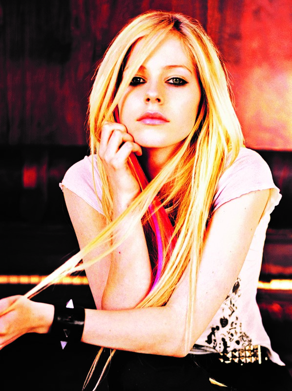

基本资料
- 中文名
- 艾薇儿·拉维尼
- 外文名
- Avril Ramona Lavigne
- 别名
- 酵母
- 国籍
- 加拿大、法国
- 出生地
- 加拿大安大略省贝尔维尔
- 出生日期
- 1984年9月27日
- 星座
- 天秤座
- 血型
- B型
- 身高
- 160 cm
- 体重
- 43 kg
- 职业
- 歌手、词曲作者、演员
- 经纪公司
- 史诗唱片
- 代表作品
- Complicated、Sk8er Boi、
Girlfriend、Hot、Alice、
What The Hell、Smile、
Head Above Water - 主要成就
- 2002年MTV音乐录影带大奖最佳新人奖
2003年朱诺奖年度新人奖
2005年朱诺奖年度艺人奖
2007年MTV欧洲音乐奖最佳独唱歌手奖
简介

艾薇儿生于加拿大安大略省的贝尔维尔，名字来源于法语中的“四月”（Avril）。2岁时，父母发现了艾薇儿的音乐才能。5岁时，艾薇儿随家人迁居到安大略省的纳帕尼小镇，并进入教堂的唱诗班学习声乐和钢琴。
在学校里，艾薇儿是个“假小子”，经常因为与其它学生打架而被赶出教室。7年级时，艾薇儿与加拿大摇滚女歌手艾拉妮丝·莫莉塞特在洛杉矶进行了同台表演。12岁时，父亲给她买了一把吉他。
从此，她开始到社区剧院为他人演唱自己写的歌。
| 2002 | 发行个人首张录音室专辑《Let Go》，从而正式出道 |
| 2003 | 入围第45届格莱美奖最佳新人奖，并凭借歌曲《Sk8er Boi》以及《Complicated》分别入围最佳摇滚女歌手奖和最佳流行女歌手奖 |
| 2004 | 凭借歌曲《I'm with You》和《Losing Grip》分别入围第46届格莱美奖的最佳流行女歌手奖以及最佳摇滚女歌手奖 |
| 发行第二张个人录音室专辑《Under My Skin》 | |
| 2007 | 个人单曲《Girlfriend》在美国公告牌百强单曲榜夺冠 |
| 发行第三张个人录音室专辑《The Best Damn Thing》 | |
| 获得MTV欧洲音乐奖最佳独唱歌手奖 | |
| 2010 | 献唱电影《爱丽丝梦游奇境》主题曲《Alice》 |
| 2011 | 发行第四张个人录音室专辑《Goodbye Lullaby》 |
| 2013 | 发行同名录音室专辑《艾薇儿·拉维尼》 |
| 2014 | 因患莱姆病而渐渐淡出乐坛 |
| 2018 | 发行个人单曲《Head Above Water》而正式回归 |
| 2019 | 发行第六张个人录音室专辑《Head Above Water》 |